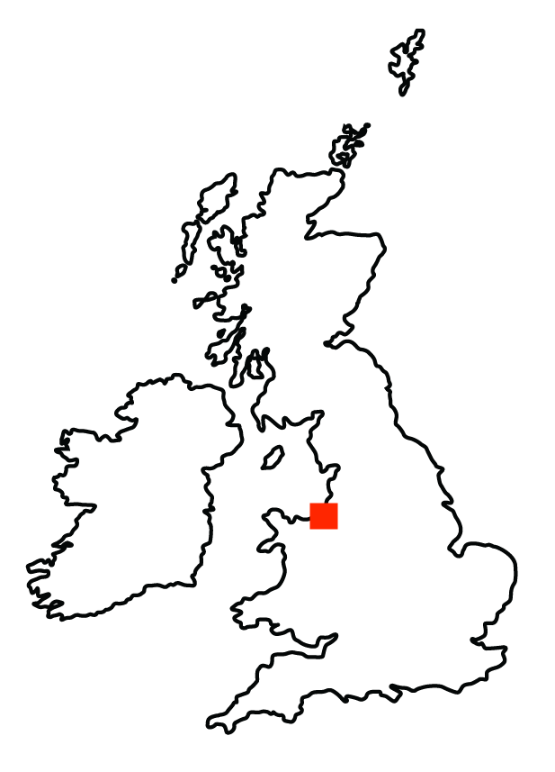

The Travel Time Platform was a useful resource throughout my master's dissertation research which was based on rail travel in the city of Liverpool. Developed by iGeolise, the Travel Time Platform is an external plugin for QGIS and includes functions such as a route calculator, time mapping and geocoding. The first representation below is a time map which illustrates the achievable distance an individual can travel from the city centre of Liverpool when using the rail network. The function parameters were set to 8:00am on the 30th of January 2020 and executed for fifteen-minute intervals for up to an hour of travel. This returned four isochrone-polygon layers which were larger in size as the travel time increased and included the time it would take to walk to the train station.
Areas which host a rail station, such as St. Michael’s, Mossley Hill, Cressington and Warbreck, are able to access the city centre in less than 45 minutes. Traveling to the wards without which do not host a rail station, including Norris Green, Croxteth and Belle Vue, is likely to take around 60 minutes or more.
The time map also demonstrates that the speed and directness of the rail network influences mobility. An individual situated around Liverpool South Parkway can access the city centre in less than 30 minutes despite its greater distance, as this train station is served by multiple rail services which travel to Liverpool Central and Liverpool Lime Street.
Following this, I operated the route calculator function to detail a typical journey when using the rail network from each ward to the city centre. The origin was identified as the most central point of each ward and calculated using the centroid function and the destination was the city centre. The calculation was performed on 26 out of the 30 wards with the four exceptions including Everton, Princess Park, Riverside and Central as these wards are equal distance from the city centre and the nearest rail station. The output displays the most practical route to the nearest train station and the rail journey from this station to the city centre as a total journey for each ward in Liverpool, with the fare price and journey time included in the attribute table.
The map shows the wards which host a passenger rail services, such as Fazakarley, St. Michaels and Church, are able to directly access the city centre through a journey which includes a short walk to a nearby station and direct rail transit. This contrasts sharply to the wards located at a distance from a rail station; examples include Croxteth, Norris Green and Woolton where residents require a journey across ward boundaries in order to engage with the rail network.
A number of rail stations are unable to facilitate car journeys. Broad Green, which is located between Knotty Ash and Childwall, does not offer designated car parking space which means individuals are unable to use a park-and-ride style system here. Residents of Yew Tree or Belle Vue must find another method of commuting to Broad Green or use another rail station.
My final projections in this chapter were generated using the Distance Matrix API function of the Travel Time Platform. In this, the system used the centroid points shown in the map above and calculated the journey time when commuting towards the city centre. I chose to run the Matrix with a 45-minute journey timeframe, as this is commonly cited as the maximum length of time the average individual would commute to work, and the output highlights which wards offer access to the city centre in less than 45 minutes.
The results of the matrix were exported to .csv file and filtered to display only those wards with access to the city centre in 45 minutes or less. Using RawGraphs, a circular dendrogram was generated to highlight the length of journey for those wards.